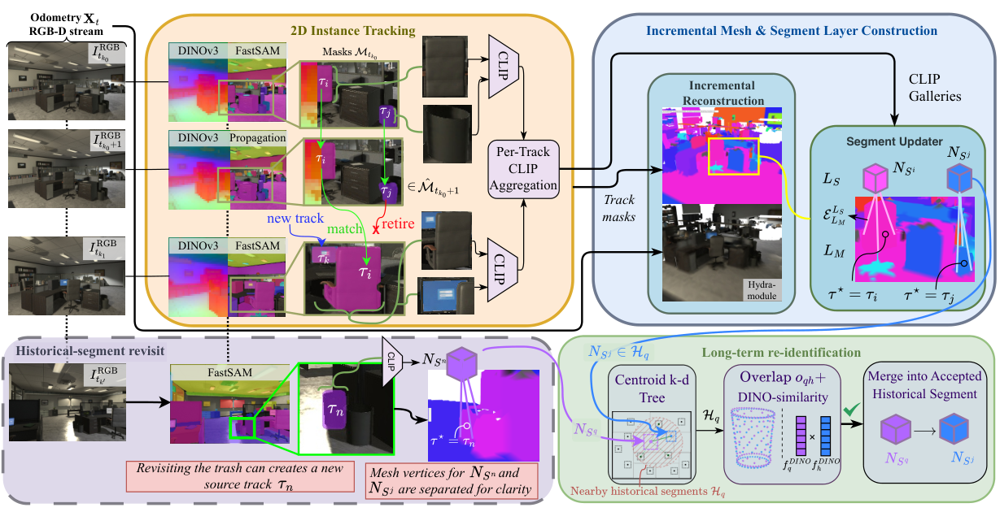

Problem Setup
01 · Task and Persistent Identity
开放词汇地图需要同时回答两个问题：哪些观测属于同一个物体，以及这个物体与文字查询有多相关。前者决定三维实例边界和持续身份，后者决定语言检索。只让每帧裁剪与文字对齐，并不能自动建立跨帧实例 ID；反复进行完整三维匹配又会增加计算负担。
TrackGraph 输入连续 RGB-D 图像和里程计位姿 Xₜ，在 Hydra 的分层场景图框架内增量维护网格、类别无关实例片段以及更高层空间结构。深度与位姿用于把二维区域投影到共同坐标系。实验结果依赖这些输入，不能直接作为单目重建骨干的性能证据。
需要区分 source track 与 persistent segment。前者是一段二维跟踪期间持续的来源 ID；后者是地图中希望长期保存的三维实例。同一物体离开视野再回来，可以产生新的 track，却通过历史重识别归入同一 segment。这个区别使“跟踪中断”不必等价于“地图中新建物体”。
Architecture
02 · Figure 2: From Masks to a Scene Graph

Peder Borge Hellesylt et al. · 2026 · CC BY 4.0 · Unmodified original figure · Paper & Caption ↗
沿原图上半部分看，关键帧先经 FastSAM 得到区域掩码，并提取 DINOv3 特征。相邻帧之间通过特征对应传播区域，而不是每帧重新分割并建立所有三维关联。论文默认每 24 帧设置一个关键帧；每个处理帧仍提取 DINOv3，因此关键帧稀疏不等于其他帧没有计算。
带来源 ID 的掩码随深度进入增量重建。右侧 segment updater 根据网格重叠与外观一致性形成持续三维片段。CLIP 位于另一条异步路径，只在关键帧的对象裁剪上提取，按来源轨迹聚合后附到对应三维片段。DINOv3 是视觉对应特征，CLIP 才提供图文对齐空间，两者在系统里承担不同功能。
原图下半部分展示重访：历史物体再次出现时，二维跟踪可先生成新的来源轨迹。系统随后在历史片段中按空间邻近、表面重叠和 DINO 相似度寻找同一实例，接受匹配后转移轨迹、特征库和图连接。它不是用一个相同类别名称直接合并物体。
Association
03 · Short-Term Tracking and Keyframe Correction
设 Yᵣ(q) 是参考帧 r 中位置 q 的实例标签分布，a 是由 DINO 特征相似度得到的归一化权重。当前帧每个位置 p 从参考位置读取标签分布，再上采样并取最大响应得到掩码。参考集合包含上一关键帧和近期帧，从而把视觉相似性转换成身份传播。
传播结果不被无限期直接接受。遇到新关键帧后，系统把预测掩码与 FastSAM 新检测进行匹配：IoU 衡量区域重叠，截断为非负的 DINO 余弦相似度衡量外观，两者各占一半。实现设定要求 IoU 至少 0.15、综合分数至少 0.35，再执行贪心一对一匹配；未匹配检测创建新轨迹，未匹配活动轨迹结束。
DINO 轨迹特征按系数 0.2 做指数滑动平均；CLIP 特征按该轨迹已有的 CLIP 观测计数求均值。二者更新公式不同。论文没有为这些读写规则训练新的端到端网络：这里的“更新”指在线状态更新，骨干使用预训练权重，阈值是系统设计的一部分。
Yₜ(p) = Σ_(q,r ∈ Kₜ(p)) aₚᵩᵣ Yᵣ(q) sᵢⱼ = 0.5 IoU(M̂ᵢ,Mⱼ) + 0.5 max(cos(fᵢᴰᴵᴺᴼ,fⱼᴰᴵᴺᴼ),0)
Map Fusion
04 · Writing Track Evidence into Geometry
TSDF 是表面附近经过截断的有符号距离场，用多帧深度融合稳定几何。TrackGraph 同时在每个体素中保留最多四个来源轨迹假设及其累计权重。多个假设允许边界交叠、局部遮挡和跟踪切换在融合过程中暂时共存，而不是立即只留下一个不可逆的标签。
写入权重除了常规 TSDF 权重，还乘以 γ。关键帧掩码的 γ 为 1；传播帧使用 αₚ/(1+βₚΔ)，其中 Δ 为距离最近关键帧的帧数，αₚ=0.25、βₚ=0.1。距离校正帧越远，传播结果的身份投票越弱。这是对误差积累的显式处理，不是由文字语义判断观测可信度。
教学算例：若 Δ=10，则 γ=0.125。在其他条件相同时，一次这样的传播观测只贡献关键帧的八分之一身份权重。该算例解释写入规则，不是额外实验结果。假设槽满时，新来源替换累计权重最小的一项，并不要求新观测权重已经超过旧项。
提取网格后，顶点继承体素的轨迹假设，以最高权重来源形成候选片段；非获胜假设也用于关联。活动片段匹配要求最少五个共享顶点、至少一侧重叠比例达到 0.75，并满足 DINO 相似度 0.80。三维范围和外观共同约束身份，而不是只看类别。
ℓᵥ,τ ← ℓᵥ,τ + w_TSDF · γₜ(τ) γₜ = 1 (keyframe) γₜ = 0.25 / (1 + 0.1 Δ) (propagated frame)
Memory Structure
05 · Historical Re-identification and Language Retrieval
局部重建在当前位姿周围的 8 米活动窗口内进行。某个片段的全部顶点离开活动区域后，它可以作为历史片段继续保留。重访时，先用质心 k-d tree 缩小候选集合，再比较当前顶点中有多少落在历史表面的 0.10 米邻域内，并计算 DINO 余弦相似度。几何与特征综合通过阈值后才合并。
历史匹配的重叠、外观和综合分数阈值分别为 0.42、0.70、0.65；综合分数对两项等权。这个设计将短期连续性和长期重访分开处理，减少每帧对全地图进行密集语义匹配的需要。不过，它仍依赖位姿和重建表面的一致性，场景实际移动或大幅漂移可能破坏这些条件。
对一个持续片段，系统保存的是按来源轨迹组织的 CLIP gallery：每条轨迹内部平均，多条轨迹之间保留不同特征。文本查询 q 的片段得分取所有来源特征余弦相似度的最大值。这样，某个清晰视角的特征不会必然被其他视角平均稀释。
个人分析：最大值聚合也可能被一个异常高分视图影响，而且视图库越大，出现偶然高相似的机会可能越多。论文消融支持当前数据上的平均收益，并没有解决任意规模图库的校准。每体素四槽和八米活动窗口也不等于总内存恒定；历史实例和轨迹特征仍会随探索增长。
sᵢ(q) = max_(τ ∈ gallery(i)) cos(q, fτᶜᴸᴵᴾ)
Evaluation
06 · What the Quantitative Results Measure
论文在 Replica、ScanNet++ 和 HM3D 上采用 OpenLex3D 评测。开放词汇语义评价对每个点预测前五个标签，再按真值对象汇总其同义匹配、描述性、混淆等类别。表中的 S 是 synonyms 类别的频率，按对象汇总后平均；S=0.50 不是 mIoU，也不能直接读成一半完整实例被正确恢复。地板、天花板、墙面不计入这一对象评价。
实例检索 AP 则需要空间范围匹配，主 AP 对 0.50 到 0.95、步长 0.05 的三维 IoU 阈值取平均。一个片段即使语义特征准确，也可能因为覆盖不完整或碎片化，在高 IoU 的 AP 上受罚。因此，下面的 S 与 AP 分别回答语义匹配和实例恢复问题。
表 III 中相同 OpenCLIP ViT-H、0.03 米体素的 Replica 对照最容易解读。TrackGraph 相对 OVI-MAP 用时 8.9 对 15.1 分钟、显存 8.3 对 27.2 GB，但 AP 为 6.00 对 7.83。由这组数字可说它以较低处理成本获得更高 S，不能说它在所有重建和检索指标上胜出。
效率条件也需要保留：上述两法在 A100 上运行，但 TrackGraph 处理每帧，OVI-MAP 每十帧处理一次；其他基线的部分效率数字来自不同硬件。HM3D 上，同为 ViT-H 的 TrackGraph AP 为 2.16，OVI-MAP 为 6.89。作者将较大场景中的完整实例范围恢复视为困难，这与“语义分数尚可但 AP 偏低”一致。
| Replica · ViT-H · 0.03 m | AP ↑ | S ↑ | Time (min) ↓ | RAM (GB) ↓ | VRAM (GB) ↓ |
|---|---|---|---|---|---|
| OVI-MAP | 7.83 | 0.40 | 15.1 | 10.3 | 27.2 |
| TrackGraph | 6.00 | 0.50 | 8.9 | 9.5 | 8.3 |
Evidence
07 · Ablations and Deployment Boundaries
跟踪消融把 FastSAM+BoT-SORT 与本文 DINO 跟踪放到相同其余流程中。AP 几乎相同，分别为 6.01 和 6.00，但最大输入频率从 6 Hz 增至 15 Hz，AP50 从 13.74 增至 15.78。这个对照支持效率与部分实例指标的收益；同时显存从 7.1 增至 8.3 GB，不能把节省显存归因于 DINO 跟踪这一个组件。
语言特征库消融把整片段一个均值特征改成多来源最大值检索，AP 从 5.65 变为 6.00，S 从 0.45 变为 0.50。这是对“保留观测差异”的直接证据，但并未比较学习式淘汰、固定容量选择或语义控制几何读写。
真实四足平台使用 RGB-D 相机，并由激光雷达与 IMU 支持里程计，在 Jetson AGX Thor 上报告 7.5 Hz 机载运行。该配置改用更轻的 CLIP ViT-B、短边 480 像素的 DINO 输入和 0.125 米体素，并处理 30 Hz 相机流中的每第四帧；不能把它与主表的体素精度和编码器直接等同。无人机展示使用记录的数据。二者说明系统有机器人集成证据，但不能把后者解释成已经完成自主飞行闭环。
| Tracking Ablation | AP ↑ | AP50 ↑ | Max Input (Hz) ↑ | VRAM (GB) ↓ |
|---|---|---|---|---|
| FastSAM + BoT-SORT | 6.01 | 13.74 | 6 | 7.1 |
| DINO-based Tracking | 6.00 | 15.78 | 15 | 8.3 |
Personal Analysis
08 · Connections to Semantic Memory
与 OVI-MAP 一起读，最有用的差别是持久状态的组织粒度。OVI-MAP 根据对象覆盖决定语义提取并融合实例特征；TrackGraph 先保留二维来源轨迹，再把多个来源挂到一个长期三维实例，并在查询阶段选择匹配视图。后者让历史证据具有来源，而不只是一个被不断覆盖的平均向量。
对于重建 memory，这提示一个具体但尚未验证的方向：把身份关联、证据来源和任务查询分开定义，再研究哪些观测需要保留。本文并没有让 CLIP 查询改变几何预测，也没有通过重建损失学习 memory 读写。因此迁移到 LingBot-Map 时，需要重新定义特征如何进入解码器，以及语义在同等容量下是否改善几何，而不能只搬运一个 gallery 并沿用这里的结论。
Discussion
Reading Questions
Does language similarity determine instance identity?
没有。短期和长期关联使用 DINO 外观及区域或三维重叠。CLIP 为下游语言检索提供表示，不能把两者混称为语言驱动的关联。
Why keep several track features for one segment?
不同来源可能对应不同视角或可见部分。轨迹内均值减少重复观测波动，轨迹间保留差异；查询最大值允许某个清晰视角独立贡献。表 V 给出有限但直接的消融支持。
Is this a fixed-budget learned memory?
不是。局部体素槽位有上限，但全局历史实例与特征库没有由此获得固定总容量保证；在线更新主要由阈值、计数和匹配规则实现。
References
Original figures reproduced under CC BY 4.0; figure numbers and source links refer to the version listed above. Explanations and analysis are personal reading notes.
Verified on 2026-10-13. Paper results refer to the linked versions. Repository references were checked on this date.